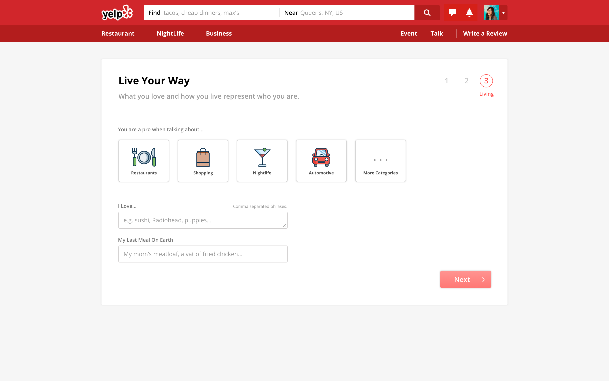

Since I did a walkthrough exercise of the account signup, today I want to work on a redesign from the signup to profile settings.
The concept is trying to make the process more fluent and organized.
Sign Up -1: I added a verify area for user to confirm the password.
Sign up step 1.Sign Up -2: After Sign Up 1, the registration is done and take the user to email verification.
Sign up step 2.Account Settings: After Sign Up 1, the registration is done and take the user to email verification.
successful verified the email.Setup 1: basic Setup 2: about
For the step 3 of the profile setting, I add a question to ask the newcomers to choose their specialties, so they can be identified as the experts of certain area. I have mentioned in the first-day blog that sometimes I feel a little skeptical to some of the reviews because they don’t tell a useful story in the certain points. Therefore, giving people an opportunity to sensor and self-understand what they like and master in will also help the visitors on Yelp to get better answers of what they are searching for.
I used the current icons from Yelp's front-page for this ui.
 Setup 3: livingAfter this step, the user flow will go back to the profile overview, and you can see the overall ui in a first-person viewpoint.
User profile in the first time.Try the prototype on Invision.
After working on this design challenge, I feel more intersted in the community about Yelp now. I truly appreciate people’s contribution to the community because they do help and support each other by writing, reading, and rating the reviews, which makes the social engagement more positive and beautiful.
Photograph by Matese Fields.